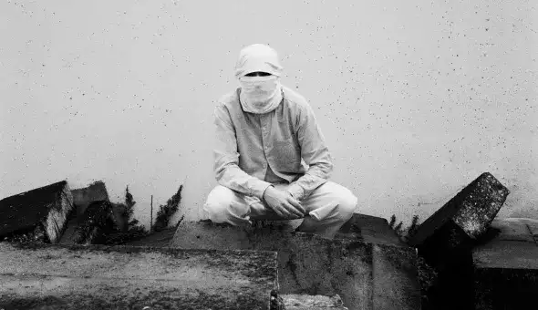
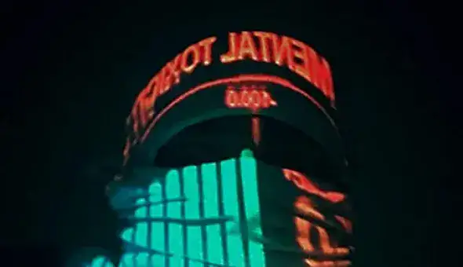

Népal, l’ange de la mort
Népal est un artiste qui m’a énormément marqué.Il était très peu connu, et ce car il n’a jamais montré son visage. Le rappeur parisien voulait que les gens l’apprécie pour sa musique, pas pour son apparence. J’attache une importance particulière à « Malik Al Mawt », et dans cet article, je vous explique ce qui rend ce morceau spécial.
Une vision de battant
Népal avait l’habitude de partager ses pensées à travers ses musiques, ce qui créait un vrai lien avec les gens qui l’écoutent. C’est le cas avec la chanson « Malik Al Mawt », qui signifie « l’ange de la mort » en arabe.
Le rappeur chante un unique couplet, qui sonne comme un message de lutte envers le système. On a vraiment la sensation qu’il écrit ce qu’il pense à l’instant T, ce qui donne de l’authenticité à sa musique.
Népal fait notamment référence à la majorité silencieuse de la population qui se tait et évite ainsi les problèmes. Il explique ensuite qu’il a choisi de ne pas faire partie de cette majorité, et donc de s’exprimer librement.
Dans les mesures qui suivent, Népal nous parle de sa vision de la mort, qu’il voit comme la fin d’un chemin. Peu importe ce qui lui arrivera, peu importe le bien ou le mal, après la mort seule l’âme reste.
Népal, toujours masqué
Un univers immersif
Si « Malik Al Mawt » est une de mes musiques préférées de Népal, c’est également car la structure de la musique place l’auditeur dans une véritable ambiance.
La chanson dans son ensemble, que ce soit par les paroles ou l’instrumentale, est simple mais vraiment plaisante à écouter.Elle dure à peine plus de deux minutes, ce qui ne nous donne pas le temps de nous lasser. Cela en fait une musique impactante.
Népal faisait la plupart de ses instrumentales lui même, en faisant preuve d’une intelligence créative, notamment pour l’utilisation des samples. La guitare par exemple, est présent tout au long de la musique. Sa mélodie est douce et nous apaise. Le rappeur nous laisse en profiter en laissant l’instrumentale continuer librement à la fin de son couplet, ce qui nous permet de la savourer jusqu’à la toute dernière seconde.
Tous ces éléments participent à la mise en place d’un univers immersif, qui nous rapproche un peu plus de Népal et de ses pensées.
Album « 2016 - 2018 »
En 2019, malheureusement, l’artiste nous quittait. La même année, le rappeur Nekfeu sortait son documentaire «Les Étoiles Vagabondes ». Népal a participé à ce périple, lui qui faisait partie de l’entourage proche du rappeur.